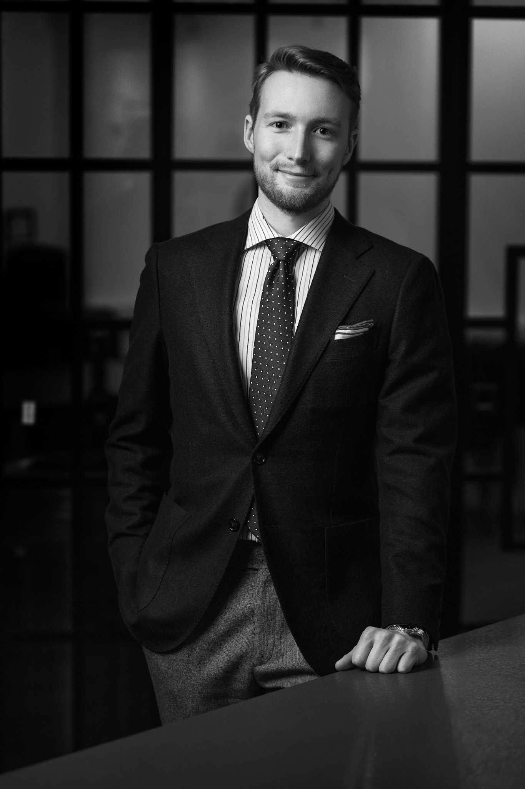

Felix
Zischka
Internationally minded business leader with six years of CEO experience in a Finnish industrial SME, combining commercial, operational and strategic experience.

Commercial thinking.
Hands-on leadership.
Experienced in leading day-to-day operations with hands-on responsibility for sales, customer negotiations, international business, strategy and financial management. Used to working closely with customers, employees, suppliers and other stakeholders to develop the business and achieve results.
Building, selling
and running businesses.
Chief Executive Officer
Overall responsibility for business, strategy, commercial development and financial performance. Worked closely with owners and the board on strategic direction, financing, investments and structural decisions.
Sales Director
Responsible for sales and commercial customer development, building key customer relationships and gaining hands-on exposure to products and market position.
Head of New Business Development
Identified and developed new business opportunities and markets, assessing market potential and routes to market while working with customers and partners.
What I bring
to a business.
Commercial Strategy
Connects customer needs with pricing, negotiations and commercial decisions. Experienced in managing complex B2B sales where users, technical stakeholders and purchasing decision-makers may differ.
B2BPricingNegotiationInternational Business
Developed customer relationships and explored commercial opportunities across the Nordics, UK, Central Europe, the UAE and the US, adapting to different markets and stakeholder expectations.
Market DevelopmentCross-culturalOperations
Understands how production realities affect margins and customer delivery. Identified bottlenecks and helped move an in-house process to a supplier for automation.
ProductionProcess ImprovementRestructuring
Has led through challenging market conditions, balancing customer commitments, operational constraints and financial priorities while managing a structured factory wind-down.
ChangeRisk ManagementResults from
the real world.
€1.3m Stockholm project
Largest project managed to date, coordinating an international customer project with complex stakeholder and delivery requirements. Other international projects ranged from €100,000 to €200,000.
International B2BProject DeliveryProduction efficiency
Identified production bottlenecks and transferred an in-house process to a supplier for automation. Also introduced ready-to-use production mixtures to reduce processing time and improve efficiency.
Operational ImprovementFactory wind-down
Leading the orderly wind-down of an enamel factory while completing existing customer projects, with the objective of finishing the shutdown profitably and protecting customer relationships.
Business ContinuityRestructuringInternational development
Built contacts and explored opportunities across the Nordic countries, UK, Central Europe, the UAE and the US, developing practical insight into market needs and routes to market.
Market ExplorationWorking across
languages and cultures.
Swedish
NativeFinnish
FluentGerman
FluentEnglish
FluentTurning AI Into Practical Solutions.
Panel & Cassette Budget Calculator
I built an interactive calculator that turns product dimensions and quantities into a production-cost estimate and budget selling price.
It combines structured input, quantity-based pricing logic, area scaling, colour surcharges and live calculations in a browser-based tool.
Facade Budget Calculator for Customers
A simple interactive tool that lets customers enter the standard and special-piece surface areas, choose a FinEmal product and colour, and receive an indicative facade budget.
The estimate is designed as a first price indication, without displaying an internal cost breakdown.